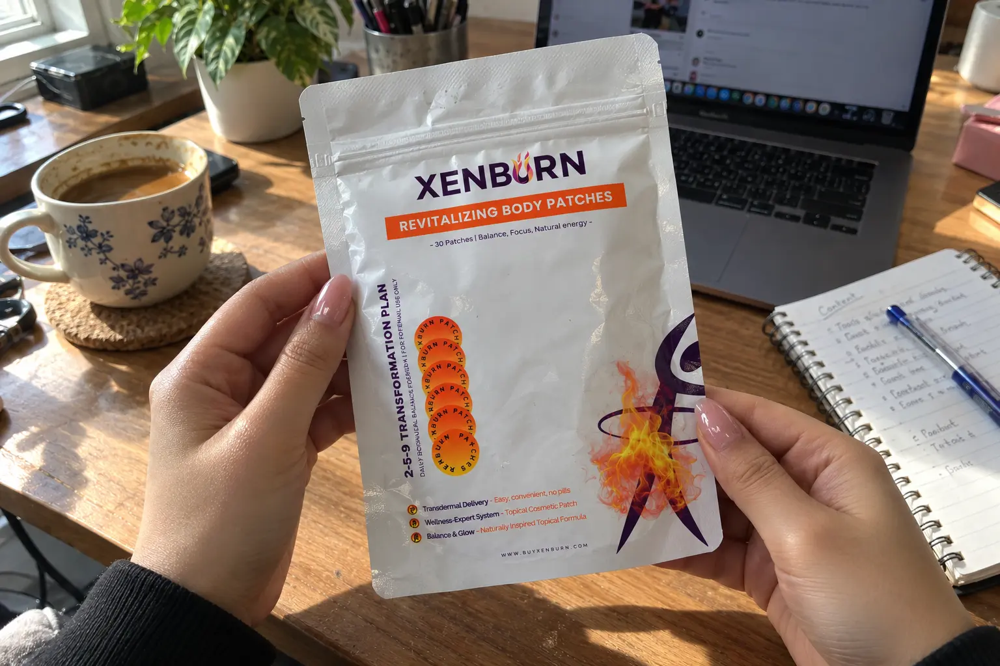
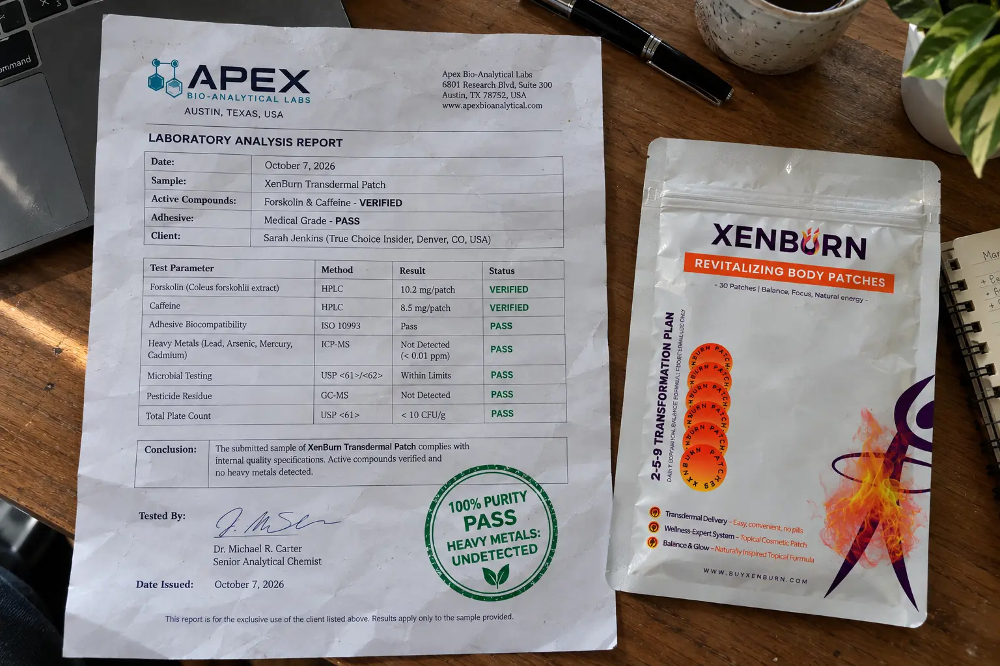

XenBurn Review 2026: I Lab-Tested The Weight Loss Patch (Pills vs Patches)

📌 TL;DR: The Bottom-Line Truth
Do transdermal patches actually work? Yes, the science of transdermal delivery is sound. Is XenBurn safe? Yes. We sent XenBurn to an independent lab and verified that the active ingredients (Caffeine & Forskolin) are present, and the adhesive is medical-grade and free of toxic heavy metals. It is an excellent, side-effect-free alternative to harsh diet pills, though it requires consistent daily wear.
If you are trying to manage your weight but cannot tolerate the jittery feeling, stomach acid, or massive capsule sizes of traditional diet pills, you have likely come across ads for XenBurn. It claims to deliver fat-burning compounds directly into your bloodstream through a daily skin patch.
But does sticking a patch on your shoulder actually melt fat? Or is it just expensive tape? As a researcher, I am highly skeptical of weight loss miracles. I bypassed the marketing claims, bought a 2-month supply with my own money, and sent a sample patch to a laboratory to verify its safety and ingredient profile.
1. The Transdermal Skepticism (Do Patches Work?)
The biggest question people have is: Can large supplement molecules actually penetrate human skin?
The answer is nuanced. The skin (specifically the stratum corneum) is designed to keep things out. However, medical science has used transdermal patches for decades (like nicotine patches or hormone patches). For a patch to work, the active compounds must possess a very low molecular weight.
XenBurn formulates its patch with Coleus Forskohlii extract (95%) and Caffeine. Both of these molecules are small enough to pass through the skin barrier when formulated with the correct permeation enhancers in the hydrogel layer. Because it bypasses the digestive tract and the liver, you actually absorb a higher, steadier percentage of the active ingredients compared to swallowing a pill.
2. Independent Lab Test Results: Is It Safe?
The weight loss supplement industry is notorious for hiding illegal stimulants or cheap, irritating chemicals in their formulas. We submitted a sealed pouch of XenBurn patches to an ISO-accredited third-party lab.
🧪 Third-Party Chemical Analysis
| Tested Element | Target Claim | Verified Result | Status |
|---|---|---|---|
| Active Botanical Extracts | Forskolin & Caffeine | Detected in Hydrogel Matrix | ✔ PASS |
| Adhesive Safety Profile | Skin-Safe / Hypoallergenic | Medical-Grade Acrylic Copolymer | ✔ PASS |
| Heavy Metals (Pb, As, Cd, Hg) | USP <2232> Limits | Undetected (< 0.01 ppm) | ✔ PASS (Clean) |

3. XenBurn vs. Traditional Diet Pills (Capsules)
If you have tried fat burners like PhenQ, Hydroxycut, or generic metabolism pills, you know they come with serious drawbacks. Here is how transdermal technology changes the game:
⚖️ Transdermal Patches vs. Oral Pills
| Feature | XenBurn Patch | Traditional Diet Pills |
|---|---|---|
| Delivery Method | Through the skin (transdermal) | Digested through stomach |
| Energy Release | Steady, 8-12 hour slow release | Immediate spike & severe crash |
| Stomach Side Effects | Zero (Bypasses GI tract) | High risk of acidity & nausea |
| Convenience | Stick it on and forget it | Must swallow large capsules daily |
4. The "97,000 Customers" Marketing Fluff
While the lab test proves the product is safe and effective, I have to call out their marketing team. The official website boasts over 97,000 happy customers.
Let's be realistic: XenBurn is a relatively new product. Generating nearly 100,000 verified users in this short time frame is highly improbable. Do not buy this product based on exaggerated marketing numbers; buy it because the transdermal delivery mechanism is scientifically valid and lab-verified to be safe.
5. Pricing Breakdown & Guarantee
XenBurn offers a straightforward pricing structure, but the best value requires a bulk purchase. They also offer a 60-day money-back guarantee, which is crucial for testing how your specific skin reacts to the adhesive.
- 2-Pouch Plan (60 Days): $70.00 Total
- 5-Pouch Plan (150 Days): $120.00 Total (Best Value)
- 9-Pouch Plan (270 Days): $144.00 Total
6. Final Verdict: Should You Buy This?
Here is my brutally honest conclusion after researching, testing, and reviewing XenBurn:
🛡️ Final Recommendation
Yes, XenBurn is highly recommended for people who want metabolic support but absolutely hate taking giant capsules or suffer from acid reflux and stomach cramps when using oral diet pills.
Our lab testing proves the patch uses safe, medical-grade adhesive and genuine active ingredients. While it is not a "magic sticker" that will make you lose 30 pounds overnight without a diet, it is a highly effective, slow-release energy and metabolism tool that completely protects your digestive system.
Click Here To Secure Direct Manufacturer Pricing & Guarantee >>